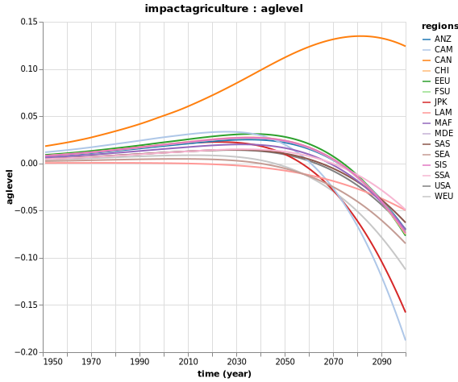
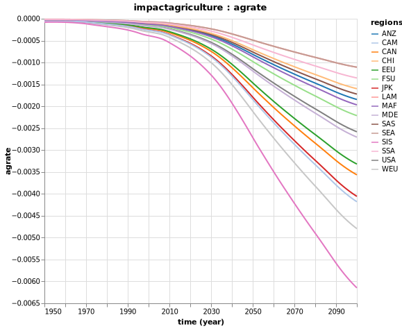
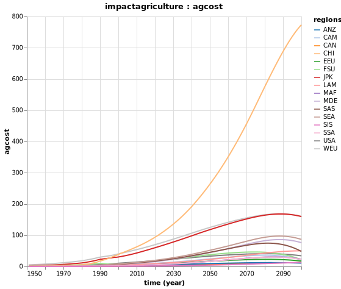

Impacts
To decompose and assess various damages due to climate change, we will use the FUND model.
This model is a so-called Integrated Assessment Model of climate change and is often used for studying impacts of climate change in a dynamic context.
We will focus here on the impacts valuation / decomposition.
We will use the Mimi Framework and the model made available as a Julia package MimiFUND.
Agriculture Impacts
Endogenous Variables
| Notation | Description | Equation |
|---|---|---|
| $A^r_{t,r}$ | Impacts due to the rate of climate change | $A^r_{t,r} = \alpha_r (\frac{\Delta T_t}{0.04})^\beta + (1-\frac{1}{\rho}) A^r_{t-1,r}$ |
| $A^l_{t,r}$ | Damages in agriculture production as a fraction due to the level of climate change | $A^l_{t,r} = \delta^l_r T_t + \delta^q_r T_t^2$ |
| $A^f_{t,r}$ | CO2 fertilization impacts | $A^f_{t,r} = \frac{\gamma_r}{ln2}ln\frac{CO2_t}{275}$ |
| $A_{t,r}$ | Impacts of climate change on agriculture | $A_{t,r} = A^r_{t,r} + A^l_{t,r} + A^f_{t,r}$ |
Parameters
| Notation | Description |
|---|---|
| $\Delta T$ | Change in the regional mean temperature (in degree Celsius) between time $t$ and $t-1$ |
| $\alpha$ | Regional change in agriculture production for an annual warming of 0.04°C |
| $\beta$ | Non-linearity of the reaction to temperature |
| $\rho$ | Speed of adaptation |
| $T$ | Global mean temperature above pre-industrial (in degree Celsius) |
| $\delta^l_r$ | Parameter for the damages function on agriculture production due to the level of climate change |
| $\delta^q_r$ | Parameter for the damages function on agriculture production due to the level of climate change |
| $CO2$ | Atmospheric concentration of carbon dioxide (in parts per million by volume) |
| $\gamma$ | Impacts of doubling of CO2 concentrations |
| $\frac{GAP_{t,r}}{Y_{t,r}}$ | Share of agriculture production in total income |
Damages
The baseline scenario corresponds to the one with an increase of 3.5°C compared to pre-industrial level by 2100.
Now, let's run the baseline model in Julia:
using Mimi
using MimiFUND
# Run FUND for baseline scenario
m = MimiFUND.get_model()
set_dimension!(m, :time, 1950:2100) # set the timeline to be 1950 to 2100
run(m)You can explore all results:
explore(m)You can see the impacts associated with the level of climate change:
p = Mimi.plot(m, :impactagriculture, :aglevel)
The impacts of the rate of climate change:
p = Mimi.plot(m, :impactagriculture, :agrate)
And, finally, the overall expected impacts on agriculture:
p = Mimi.plot(m, :impactagriculture, :agcost)
Ecosystems Impacts
Energy Consumption Impacts
Forestry Impacts
Sea Level Rise Impacts
Mortality Impacts
Human Health Impacts
Extreme Weather Impacts
Water Resources Impacts
Social Cost of Carbon
We define the social cost of a greenhouse gas as the net present value of the change in future damages from a marginal (1 tonne) change in emissions of that gas today.
In order to estimate the social cost of a greenhouse gas, the model need to first compute the difference between total monetised climate change impacts of business as usual emissions and a path with slightly higher emissions.
Then, the differences in monetized climate change impacts are discounted back to the chosen year (2020 here) and normalised by the difference in emission (namely, 1 tonne)
Marginal Model
It is simply done in Julia:
scc_year = 2020
update_param!(m, :climatedynamics, :climatesensitivity, 4.5)
mm = MimiFUND.get_marginal_model(m, year = scc_year) # The additional emissions pulse will be added in the specified yearSocial Cost of Carbon
MimiFUND.compute_scc(m, year = scc_year, eta = 1., prtp = 0.) * 1.68 # +68% inflation between 1995 and 2020Which gives:
51.32718736191957